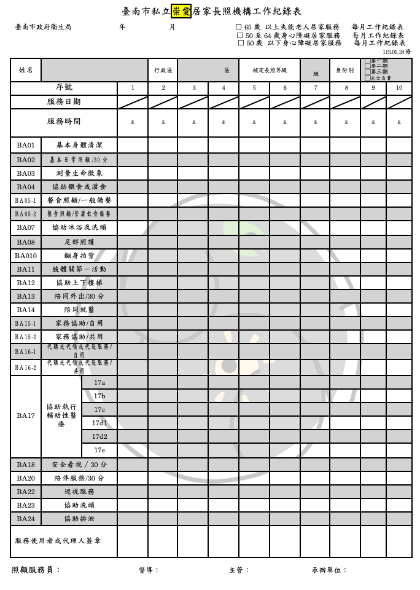
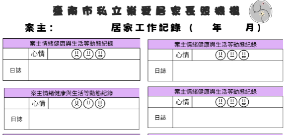
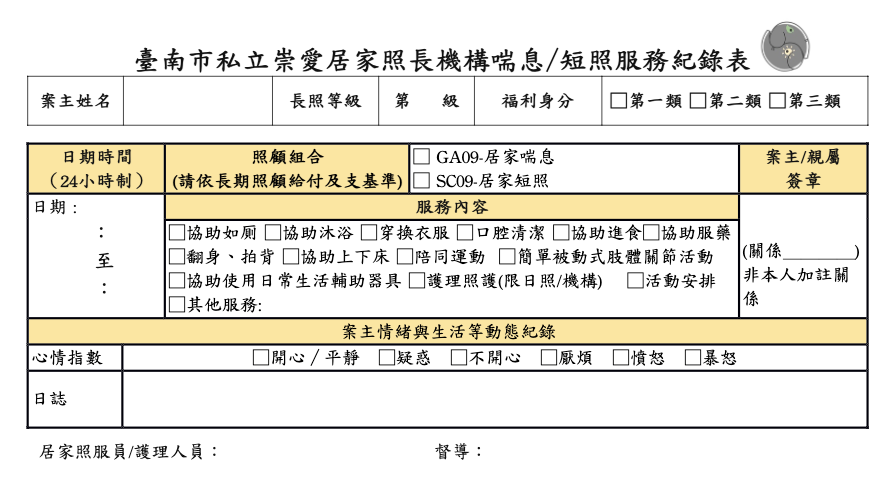
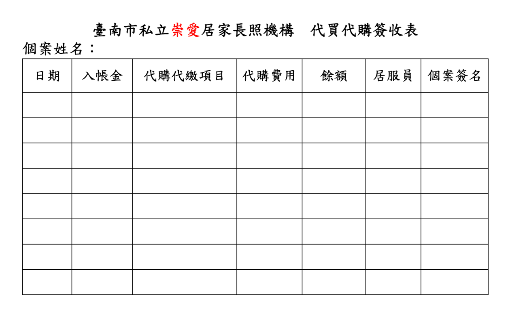
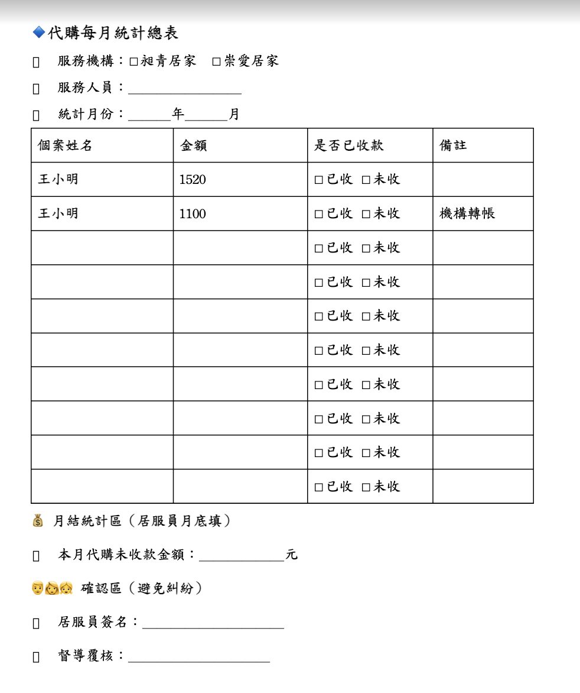

照顧組合碼別照顧組合名稱 | 定義 | 操作原則 | |||
BA05 餐食照顧 | 一、餐食照顧，下列任一組合： （一） 在案家備餐、備餐後用具及餐具善後工作及清潔，備餐一次為一組合。 （二） 在案家準備一日所需之管灌飲食及善後工作及清潔。一日使用一組合。 二、 單純之加熱飯菜、非自製食物（如管灌食品、牛奶）之管灌食物屬於 BA04。 三、 同住之長照給付對象共同使用此項照 顧組合時，僅擇一長照給付對象扣其照顧及專業服務額度及部分負擔。 | 一、 僅限服務使用者本人 →原則上僅備餐給服務使用者使用。以協助失能者維持一般生活之原則，不須為家庭其他成員。 二、 食材來源 → 由服務使用者或家屬提供，如需購買應使用 BA16「代購或代領或代送服務」碼別申報。 三、 衛生安全 → 過程須保持清潔，避免交叉污染。 四、 特殊飲食 → 若有醫師 /營養師建議，應依照指示準備，並避免超出專業範疇。 五、 若需解凍、需要處理的 菜，可請案家先行處理。 | |||
BA15 家務協助 | 一、 內容：依長照給付對象是否獨居分為二種，並以三十分鐘為一支付單位。 （一） 獨居之長照給付對象：居家生活空間之清理或洗滌、衣物洗滌及晾曬烘乾（含至自助洗衣店洗衣）、熨燙、衣物簡單縫補及相關家事服務。 （二） 非獨居之長照給付對象：睡眠及主要居家生活空間之清理或洗滌、衣物洗滌及晾曬烘乾（含至自助洗衣店洗衣）、熨燙、衣物簡單縫補及相關家事服務。 二、 清理洗滌方式包含吸塵或濕式清洗，沖洗或除塵，非大掃除。 三、 上述非獨居之長照給付對象家務協助 應為長照給付對象本身所需，如為長照給付對象與家人共用之區域，則本項組合之金額僅支付百分之五十，另外百分之五十應由長照給付對象自行負擔支付。 四、 本組合所稱之獨居者定義如下： （一）長照給付對象自己一人居住。 （二）長照給付對象與家人同住，每名家人應符合下列條件之一：
六十五歲，並領有身心障礙證明。
六十五歲，且長照需要等級為二至八級。
五、 長照給付對象使用之臥室及浴室，不論是否有與家人共用，均不屬於共用區域。 六、同住之長照給付對象共同此項照顧組 合時，如住同一臥室，僅擇一長照給付 對象扣其照顧及專業服務額度及部分負擔，如住不同臥室，均應扣其照顧及專業服務額度及部分負擔。 | 一、以服務使用者需求為優先 → 僅維持基本生活環境清潔。以維持失能者生活品質，無須協助非日常照顧之大掃除。 二、 使用案家提供工具 → 照服員不需自帶清潔工具與清潔劑。 三、 安全第一，遇有高風險清潔（攀高、搬重物）可拒絕，並回報居督員，後續由居督員與案家討論。 四、 時間合理 → 不得因家屬要求超出服務範圍。 | |||
BA20 陪伴服務 | 於服務時間內陪伴服務對象從事日常生活活動、社會互動、休閒活動或情緒支持等服務，以維持其身心功能、減少孤獨感及促進生活參與。 服務目的在於提供陪伴與關懷，增進服務對象心理支持與社會參與，而非取代家屬照顧責任或從事專業醫療行為。 | 一、以服務計畫內容為依據 服務人員應依照：
提供陪伴服務。 不得自行增加或變更服務項目。 二、以個案需求為中心 應尊重： 個案意願、宗教信仰、生活習慣以及個人隱私，避免強迫參與活動。 三、鼓勵個案參與 服務人員應： 鼓勵自主活動、提升互動意願並維持現有能力，避免完全代勞。 四、注意安全 服務期間應觀察： 意識狀況、精神狀況、行動能力以及跌倒風險，倘若發現異常應立即通報。 （五）維護專業界線 服務人員不得： ✗ 借貸金錢 | |||
一、生活陪伴
| 二、休閒活動陪伴
| 三、認知促進活動
| 四、安全陪伴
| ||
內政部 (2024)。新住民基本法—全面提升對新住民的照顧及權益保障。取自 https:// www.ey.gov.tw/Page/5A8A0CB5B41DA11E/c9c332c6-21a3-4193-bfa6- 2b4fd3619ca9.
行政院 (2023)。行政院政策櫥窗「原住民族健康法」。取自 https://www.mohw. gov.tw/cp-18-74972-1.html.
行政院 (2025)。 族群。取自https://www.ey.gov.tw/state/99B2E89521F- C31E1/2820610c-e97f-4d33-aa1e-e7b15222e45a.
衛生福利部 (2023)。長照機構評鑑指標。取自 https://1966.gov.tw/LTC/cp-6457- 69929-207.html.
Aged Care Quality and Safety Commission. (2021). Effective incident management systems: Best practice guidance. Australian Govern- ment. https://www.agedcarequality.gov.au/sites/default/files/media/ effective-ims-guidance-august-2021.pdf
National Association of Social Workers. (2007). NASW standards and indi- cators for cultural competence in social work practice. Washington, DC: NASW Press.
National Center for Cultural Competence (2025). CULTURAL COMPE- TENCE CONTINUUM. Washington DC: Georgetown University Center for Child and Human Development. Retrieved from http://gucchd. georgetown.edu/nccc.
World Health Organization. (2008, March 17). WHO global report on falls prevention in older age. https://www.who.int/publications/i/ item/9789241563536